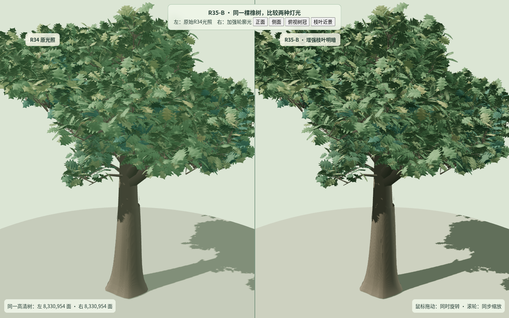

R35-A · 圆润叶缘
左右均为 8,330,954 面，枝干、叶片数量、机位和光照不变。只改变每片橡叶的裂片凹口与曲面轮廓。
打开模型几何 A/B两组由真实 Three.js + Blender 几何运行的 A/B 测试。下方均为实际浏览器截图，不是 AI 概念图。点击后可以同步旋转两棵树、放大近看枝叶，也可切换树冠俯视。
左右均为 8,330,954 面，枝干、叶片数量、机位和光照不变。只改变每片橡叶的裂片凹口与曲面轮廓。
打开模型几何 A/B
左右共用同一份 833 万面三维网格，只改变真实灯光与阴影配置。可对比背光枝叶、树冠内部深度。
打开树冠光影 A/B